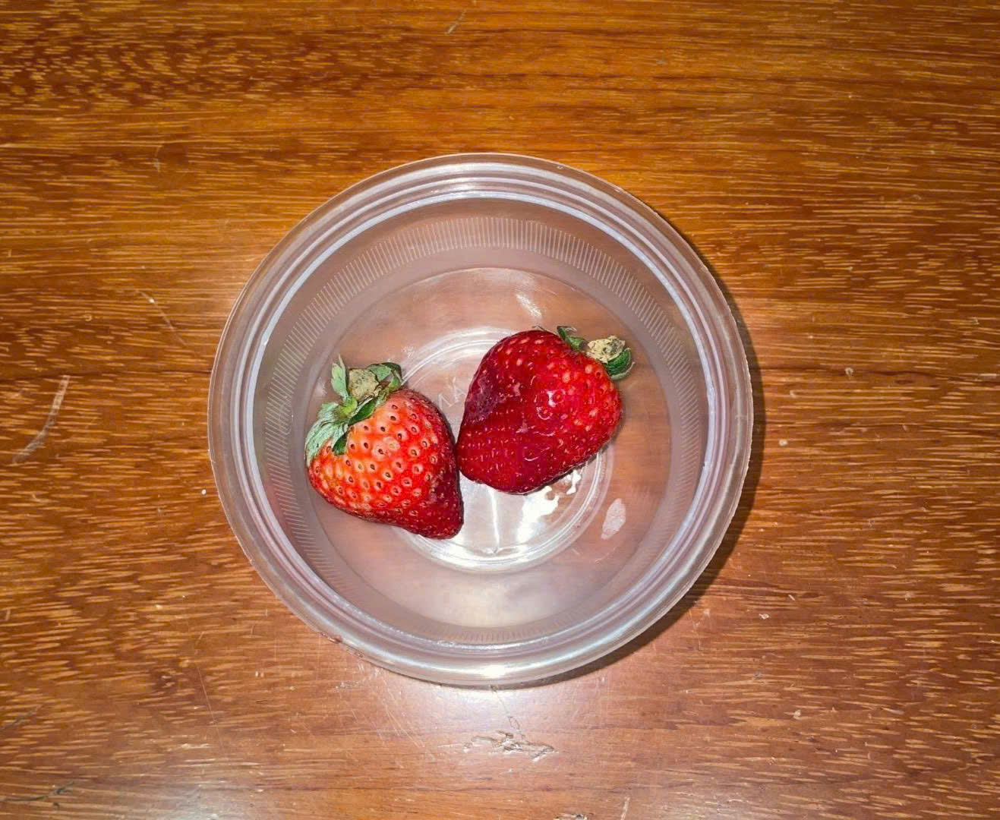
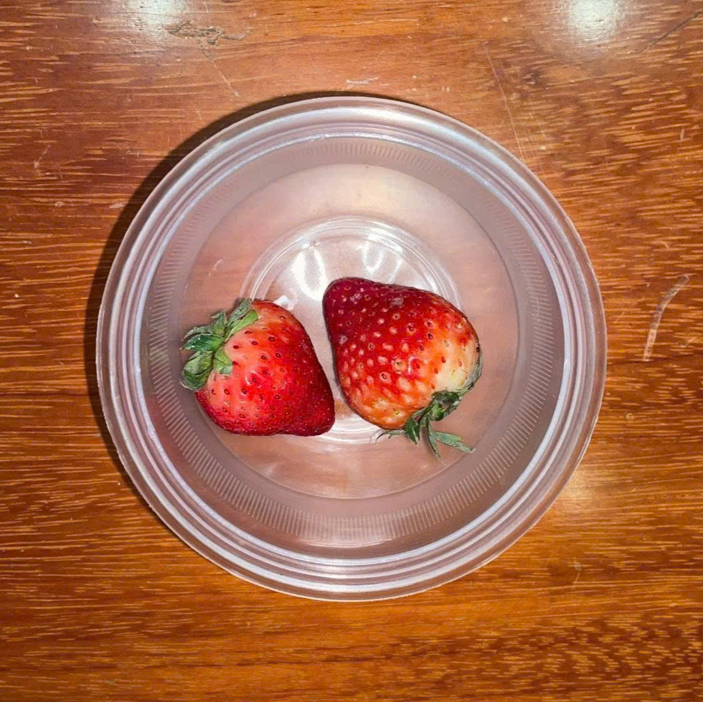
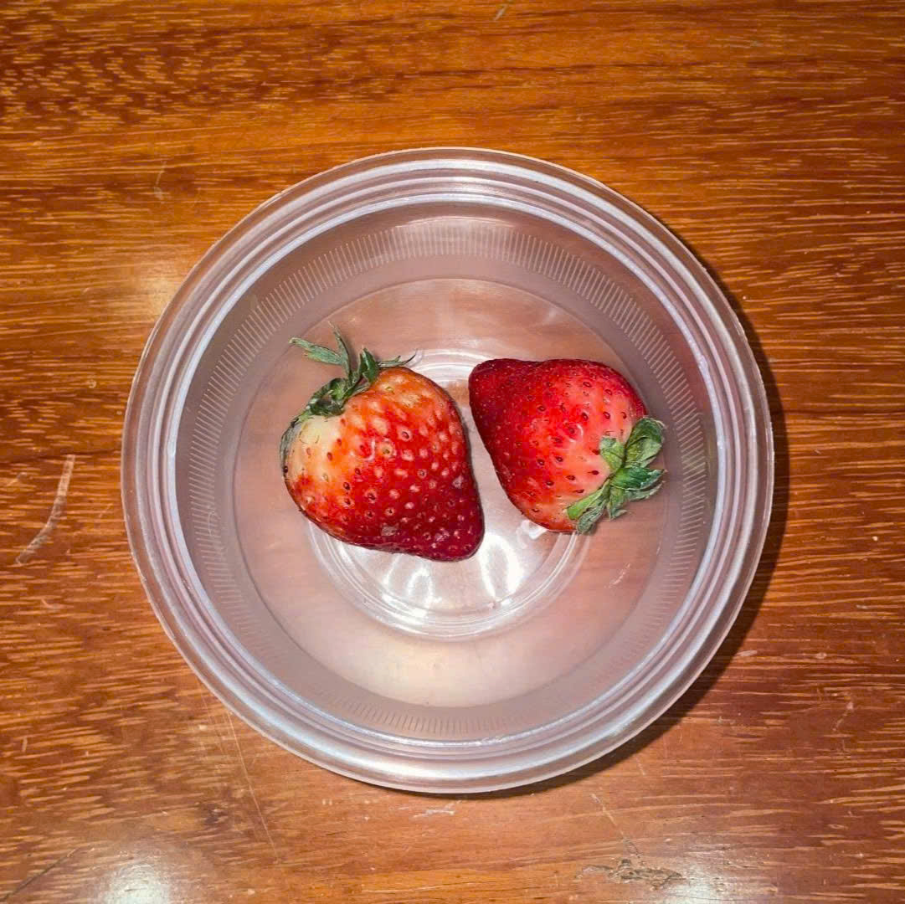

I. Mở đầu
Trong những năm gần đây, việc sử dụng các vật liệu sinh học thân thiện với môi trường để bảo quản thực phẩm đang được quan tâm rộng rãi.
Chitosan là một polysaccharide tự nhiên được điều chế chủ yếu từ chitin có trong vỏ tôm, cua. Với đặc tính kháng khuẩn, tạo màng sinh học và an toàn cho sức khỏe con người, chitosan được xem là một giải pháp tiềm năng trong bảo quản nông sản tươi.
🍓 Trái dâu tây là loại quả có giá trị dinh dưỡng cao nhưng rất dễ hư hỏng do hàm lượng nước lớn, vỏ mỏng và dễ bị vi sinh vật tấn công.
II. Mục tiêu nghiên cứu
1 Điều chế dung dịch
Điều chế dung dịch từ chitosan thô để sử dụng trong thí nghiệm
2 Khảo sát khả năng bảo quản
Thử nghiệm các phương pháp nhúng chitosan khác nhau
3 So sánh kết quả
Đánh giá mức độ tươi, hư hỏng của trái dâu sau thời gian bảo quản
4 Kết luận
Đưa ra nhận định về hiệu quả của chitosan
III. Vật liệu & Phương pháp
📦 Vật liệu
- ✓ Chitosan thô
- ✓ Trái dâu tươi (kích thước và độ chín đồng đều)
- ✓ Axit axetic loãng
- ✓ Dụng cụ: cốc thủy tinh, rây lọc, khay đựng...
⚗️ Quy trình điều chế
Bước 1: Nghiền nhỏ chitosan thô
Bước 2: Cân 0,2g chitosan + 20ml axit axetic
Bước 3: Điều chỉnh pH 5.0-5.5
Bước 4: Khuấy đều, để yên 12 giờ
Bước 5: Lọc và thu dung dịch
Bố trí thí nghiệm
Nhóm 1
Đối chứng
Không nhúng chitosan
Nhóm 2
Xử lý 1 lần
Nhúng chitosan 1 lần
Nhóm 3
Xử lý 2 lần
Nhúng chitosan 2 lần
Tiêu chí đánh giá
Theo định hướng TCVN 3215-79
Màu sắc
Độ đỏ tươi, sẫm màu
Bề mặt
Khô ráo, nhăn vỏ
Nguyên vẹn
Dập nát, nứt vỡ
Mùi
Tự nhiên, lên men
Nấm mốc
Có/không, mức độ
📋 Bảng ghi nhận kết quả
📅 Ngày 1: Trạng thái ban đầu

Nhóm Đối chứng
Không nhúng

Nhúng 1 lần
Có màng nhẹ

Nhúng 2 lần
Màng bóng rõ
✅ Tươi, cứng chắc, đỏ tươi | ✅ Tươi, cứng chắc | ✅ Tươi, rất cứng
📅 Ngày 2: Bắt đầu thay đổi
📸
Thêm ảnh Ngày 2
Nhóm Đối chứng
Bắt đầu se lại
📸
Thêm ảnh Ngày 2
Nhúng 1 lần
Ổn định
📸
Thêm ảnh Ngày 2
Nhúng 2 lần
Ổn định
⚠️ Se lại, mất độ bóng | ✅ Tươi xanh | ✅ Tươi xanh
📅 Ngày 3: Sự khác biệt rõ ràng
📸
Thêm ảnh Ngày 3
Nhóm Đối chứng
Sẫm màu, dập
📸
Thêm ảnh Ngày 3
Nhúng 1 lần
Giữ màu tốt
📸
Thêm ảnh Ngày 3
Nhúng 2 lần
Chưa đổi màu
❌ Sẫm, đốm cứng | ✅ Màu tốt, cứng | ✅ Rất cứng
📅 Ngày 4: Mất nước
📸
Thêm ảnh Ngày 4
Nhóm Đối chứng
Chảy nước
📸
Thêm ảnh Ngày 4
Nhúng 1 lần
Khô ráo, mềm
📸
Thêm ảnh Ngày 4
Nhúng 2 lần
Khô ráo, chắc
❌ Chảy nước, nhũn | ⚠️ Bắt đầu mềm | ✅ Chắc chắn
📅 Ngày 5: Nấm mốc xuất hiện
📸
Thêm ảnh Ngày 5
Nhóm Đối chứng
Nấm mốc trắng
📸
Thêm ảnh Ngày 5
Nhúng 1 lần
Chưa có nấm
📸
Thêm ảnh Ngày 5
Nhúng 2 lần
Không nấm
❌ Nấm lan rộng, nhũn | ⚠️ Mềm, hơi ẩm | ✅ Giữ form tốt
📅 Ngày 6: Chỉ nhúng 2 lần còn tươi
📸
Thêm ảnh Ngày 6
Nhóm Đối chứng
Hỏng hoàn toàn
📸
Thêm ảnh Ngày 6
Nhúng 1 lần
Mềm nhũn, có nấm
📸
Thêm ảnh Ngày 6
Nhúng 2 lần
Vẫn tươi đẹp
❌ Mùi chua lên men | ⚠️ Mùi dâu chín | ✅ Mùi tự nhiên
📅 Ngày 7: Kết quả cuối cùng
📸
Thêm ảnh Ngày 7
Nhóm Đối chứng
🗑️ HỎNG HOÀN TOÀN
📸
Thêm ảnh Ngày 7
Nhúng 1 lần
⚠️ MỀM NHŨN, CÓ NẤM
📸
Thêm ảnh Ngày 7
Nhúng 2 lần
✅ VẪNTƯƠI, CHẤT LƯỢNG CAO
🏆 Phương pháp nhúng chitosan 2 lần hiệu quả nhất!
📊 Chi tiết theo dõi hàng ngày
| Ngày | Tiêu chí | Nhóm Đối chứng | Nhúng 1 lần | Nhúng 2 lần |
|---|---|---|---|---|
| 1 | Tổng quát | Tươi, đỏ tươi, quả cứng chắc. | Tươi, có màng bóng nhẹ, cứng. | Tươi, màng bóng rõ, quả rất cứng. |
| 2 | Tổng quát | Vỏ bắt đầu se lại, giảm độ bóng. | Trạng thái ổn định, tươi xanh. | Trạng thái ổn định, tươi xanh. |
| 3 | Độ cứng | Xuất hiện vỏ hơi sẫm, đốm cứng. | Quả màu vẫn tốt, cứng giữ màu. | Quả rất cứng, chưa thay đổi màu. |
| 4 | Chảy nước | Bắt đầu chảy nước nhẹ ở đáy quả. | Bề mặt khô ráo, quả hơi mềm. | Bề mặt khô ráo, quả vẫn chắc. |
| 5 | Nấm mốc | Nấm mốc trắng xuất hiện, quả nhũn. | Chưa thấy nấm, quả bắt đầu mềm. | Không nấm, quả giữ form tốt. |
| 6 | Mùi | Có mùi chua lên men, nấm lan rộng. | Mùi dâu chín, hơi ẩm bề mặt. | Mùi dâu tự nhiên, quả vẫn đẹp. |
| 7 | ✅ Kết quả | Hỏng hoàn toàn | Mềm nhũn, có nấm | Vẫn tươi, chất lượng cao |
💡 Thảo luận kết quả
Nhóm Đối chứng
Mẫu không nhúng chitosan có tốc độ hư hỏng nhanh nhất, dễ mềm và xuất hiện nấm mốc sớm (từ ngày thứ 5).
Nhúng 1 lần
Mẫu nhúng chitosan 1 lần cho thấy khả năng bảo quản tốt hơn, làm chậm quá trình hư hỏng đáng kể.
Nhúng 2 lần
Mẫu nhúng chitosan 2 lần có hiệu quả bảo quản cao nhất, hạn chế mất nước và sự phát triển vi sinh vật.
🎯 Nguyên lý hoạt động
Lớp màng chitosan tạo thành trên bề mặt trái dâu đóng vai trò như một hàng rào bảo vệ hiệu quả:
- 1 Ngăn cản mất nước: Giảm tốc độ mất nước của quả, giữ độ tươi lâu hơn
- 2 Kháng khuẩn: Tính chất kháng khuẩn của chitosan làm chậm sự phát triển của vi sinh vật gây hư hỏng
- 3 Nhúng 2 lần hiệu quả hơn: Lớp màng dày hơn tạo sự bảo vệ tốt hơn so với nhúng 1 lần
V. Kết luận
📌 Phát hiện chính
Qua thí nghiệm, chitosan điều chế từ vỏ tôm có khả năng bảo quản trái dâu hiệu quả. So với mẫu không nhúng, các mẫu dâu được nhúng chitosan có thời gian tươi lâu hơn và ít bị hư hỏng hơn.
⭐ Phương pháp tối ưu
Phương pháp nhúng chitosan 2 lần cho hiệu quả bảo quản tốt nhất, giữ dâu tươi trong suốt 7 ngày theo dõi mà không xuất hiện các dấu hiệu hư hỏng đáng kể.
🌍 Ý nghĩa thực tiễn
Nghiên cứu cho thấy tiềm năng ứng dụng chitosan trong bảo quản thực phẩm tươi, góp phần giảm thất thoát sau thu hoạch và hướng tới phát triển các vật liệu sinh học thân thiện với môi trường — một giải pháp bền vững cho nông nghiệp hiện đại.
Giới thiệu Đội Nhóm
Nhóm 3 - Lớp 11A1
Nhóm Trưởng
NGÔ MINH ĐÔNG (10)
Điều phối nhóm, quản lý tiến độ dự án
TRẦN NGỌC MINH CHÂU (07)
NGUYỄN HOÀNG ĐẠT (09)
NGUYỄN NGỌC ĐỨC (11)
NGUYỄN TIỂU LONG (20)
NGUYỄN NGỌC BẢO NHI (25)
TRƯƠNG GIA PHÁT (26)
NGÔ GIA PHÚ (27)
CAO MINH PHÚC (28)
NGUYỄN MINH QUÂN (30)
TẤT TẤN VĨ (39)
12 thành viên cùng nhau thực hiện dự án nghiên cứu ứng dụng chitosan trong bảo quản nông sản, mang ý nghĩa khoa học và thực tiễn quan trọng cho phát triển bền vững.